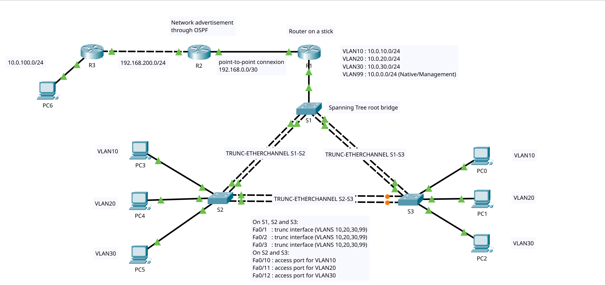

Laboratoire sur le simulateur cisco paquet-tracer
Cette page décris un laboratoire réalisé sur paquet tracer pour documenter les configurations nécéssaire pour construire un réseau utilisant VLAN, truncs, etherchannels et routage dynamique.
Pour commencer, une petit résumé de ces fonctionalitées.
Les VLANs sont des réseaux locaux virtuels. Ils permettent d'utiliser les mêmes médias physiques pour transmettre l'information de réseaux différents. Plusieurs réseaux peuvent transiger par le même commutateur, dans le même fil ou interface. Cela permet d'utiliser moins d'appareils, de mieux organiser les réseaux, d'avoir des membres d'un même réseaux à plusieurs endroits et de limiter les domaines de diffusions, ce qui augmente les performances.
Ce qui permet aux VLANs d'utiliser les mêmes interfaces et connexions filaires, c'est une configuration en 'trunc'. L'etherchannel lui permet d'utiliser plusieurs connexions filaires comme si elles n'en étaient qu'une, ce qui permet d'augmenter la bande passante et la tolérance aux pannes.

interface GigabitEthernet0/0.10
description VLAN 10
encapsulation dot1Q 10
ip address 10.0.10.1 255.255.255.0
!
interface GigabitEthernet0/0.20
description VLAN 20
encapsulation dot1Q 20
ip address 10.0.20.1 255.255.255.0
!
interface GigabitEthernet0/0.30
description VLAN 30
encapsulation dot1Q 30
ip address 10.0.30.1 255.255.255.0
!
interface GigabitEthernet0/0.99
description VLAN 99 - Management
encapsulation dot1Q 99
ip address 10.0.0.1 255.255.255.0
!
interface GigabitEthernet0/0
description trunc r1-1
no ip address
ip ospf 1 area 0.0.0.0
duplex auto
speed auto
interface Port-channel1
switchport trunk native vlan 99
switchport trunk allowed vlan 10,20,30,99
switchport mode trunk
!
interface FastEthernet0/2
description trunc 1-3
switchport trunk native vlan 99
switchport trunk allowed vlan 10,20,30,99
switchport mode trunk
duplex full
channel-group 1 mode active
!
interface FastEthernet0/4
description trunc 1-3
switchport trunk native vlan 99
switchport trunk allowed vlan 10,20,30,99
switchport mode trunk
duplex full
channel-group 1 mode active
spanning-tree mode pvst
spanning-tree extend system-id
spanning-tree vlan 1,10,20,30,99 priority 4096
interface GigabitEthernet0/1
description to R2
ip address 192.168.0.1 255.255.255.252
ip ospf 1 area 0.0.0.0
duplex auto
speed auto
!
interface Vlan1
no ip address
shutdown
!
router ospf 1
router-id 2.2.2.2
log-adjacency-changes
service password-encryption
hostname S1
enable secret 5 $1$mERr$FvP868ZenSAyl3xMNJjAU0
ip ssh version 2
no ip domain-lookup
ip domain-name DOMAIN.tld
username admin secret 5 $1$mERr$GvDaTJK9lhdXRUPWKA74O0
interface Vlan99
description management VLAN
ip address 10.0.0.10 255.255.255.0
!
ip default-gateway 10.0.0.1
!
banner motd ^CRestricted access^C
!
line con 0
password 7 082243401A160912
login
!
line vty 0 4
login local
transport input ssh
line vty 5 15
login local
transport input ssh
!